สร้าง AI Warehouse Assistant บน LINE OA
ถามสต็อก สั่งเบิก สั่งรับเข้า ผ่าน LINE แล้วดู AGV ในคลังจำลองวิ่งทำงานจริง เริ่มจาก Template ที่ใช้งานได้ ไม่ต้องเขียนโค้ดเอง
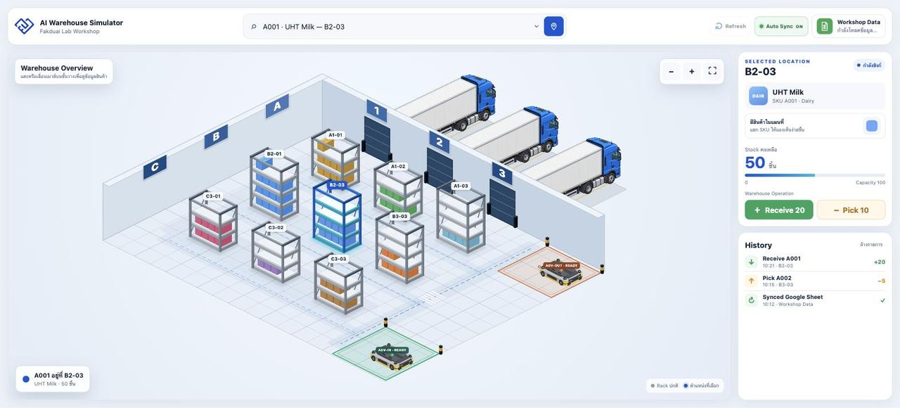
System Flow
วิธีเรียน
เริ่มจากระบบตัวอย่างที่ทำงานได้แล้ว ทดลองดู Flow แล้วค่อยแก้ Prompt ข้อมูล และ Logic ทีละส่วน เวลาส่วนใหญ่จึงใช้กับแนวคิด AI + Automation + Logistics แทนการตั้งค่า Infrastructure
ตารางวันอบรม
| เวลา | Session | กิจกรรม | Code Lab |
|---|---|---|---|
| 09:00–09:25 | AI × Logistics | ภาพรวม AI, Automation และ Demo ระบบปลายทาง | |
| 09:25–10:00 | LINE OA for Logistics | LINE OA vs Messaging API, Add Friend, Message, Webhook และ Reply | โซน P |
| 10:00–10:45 | Lab 1 From LINE to n8n | เชื่อม LINE OA กับ n8n แล้วดูข้อมูลวิ่งเข้า Workflow | พร้อมใช้ |
| 10:45–11:00 | Break | ||
| 11:00–12:00 | Lab 2 Teach Your AI | ปรับ Prompt, Role, Rules และรูปแบบคำตอบ | พร้อมใช้ |
| 12:00–13:00 | Lunch | ||
| 13:00–13:40 | Lab 3 Warehouse Data | ค้น SKU, Stock และ Location จาก Google Sheets | พร้อมใช้ |
| 13:40–14:30 | Lab 4 Simulator & AGV | Search, Receive, Pick และดู AGV ทำงาน | พร้อมใช้ |
| 14:30–14:45 | Break | ||
| 14:45–15:40 | ตอบคำถามลุ้นรางวัล | ทบทวนทุก Lab ผู้สอนเป็นผู้ดำเนินเกม | |
| 15:40–16:30 | Game และ Winner Reward | เล่นเกม แจกรางวัล |
เริ่มจากตรงไหน
เตรียม LINE Official Account
ก่อนเริ่ม Lab ทุกคนต้องมี LINE OA ของตัวเองที่เปิดใช้ Messaging API แล้ว ขั้นนี้ทำได้ตั้งแต่ก่อนวันอบรม หรือทำพร้อมกันในช่วง LINE OA for Logistics (09:25–10:00)
ดูวิดีโอก่อนเริ่ม (2:15 นาที)
เมื่อจบโซนนี้คุณจะมี
@941duujo และถูกเพิ่มเป็นเพื่อนในแอป LINE ของคุณแล้วสร้าง LINE Official Account
- เปิดลิงก์สมัครบัญชีทั่วไป (ฟรี)https://entry.line.biz/form/entry/unverifiedเปิดหน้าสมัคร ↗
- ระบบจะพาไปหน้า LINE Business ID › Login ก่อน ให้กด LINE account (ปุ่มสีเขียว)

- หน้า QR code login จะขึ้นมา เปิดแอป LINE บนมือถือ กดไอคอนสแกน QR ข้างช่องค้นหา แล้วสแกน QR บนจอ ถ้าเคยผูกอีเมลไว้ในแอป LINE จะกด Log in with email แทนก็ได้
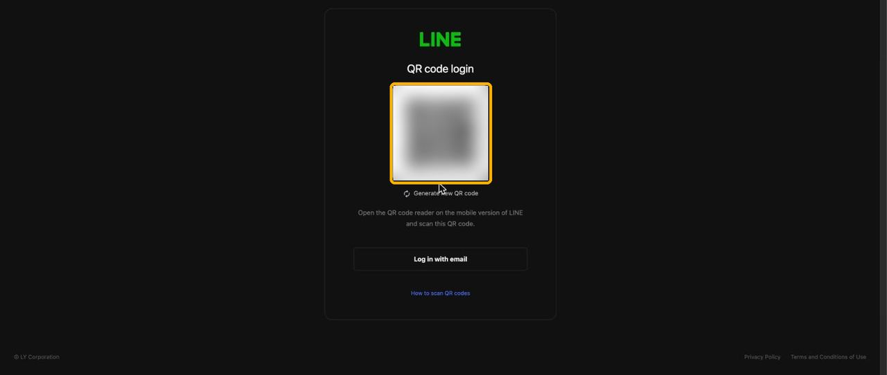
QR ในภาพถูกเบลอไว้ เพราะ QR ที่ใช้ล็อกอินได้จริงคือกุญแจเข้าบัญชี - ล็อกอินเสร็จจะเข้าหน้า สร้าง LINE ออฟฟิเชียลแอคเคาท์ กรอก ชื่อบัญชี (ไม่เกิน 20 ตัวอักษร เป็นชื่อที่ลูกค้าเห็น), อีเมล และเลือก ประเภทธุรกิจ ทั้งหลักและย่อย ส่วนชื่อบริษัทไม่บังคับ
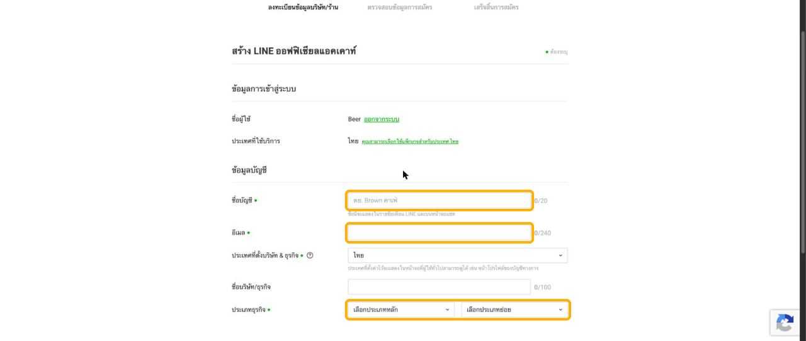
- เลื่อนลงล่าง แล้วกด ตกลง (เท่ากับยอมรับข้อกำหนดการใช้บริการ)
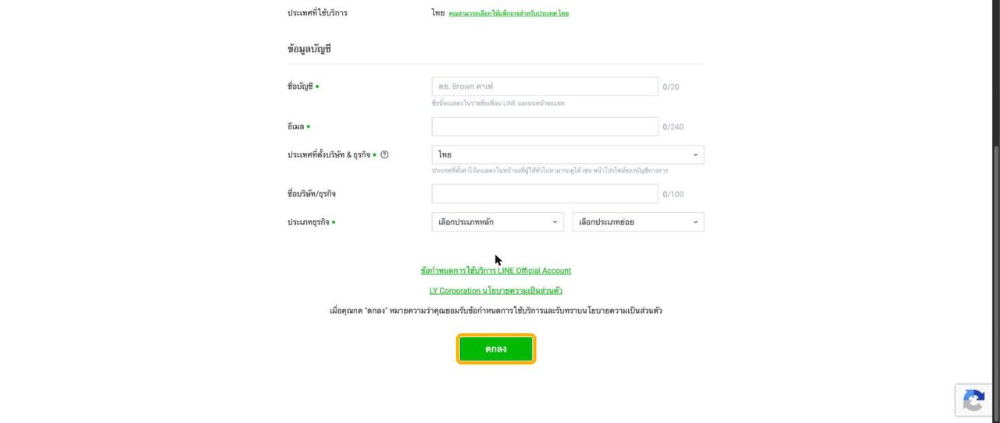
- หน้า ตรวจสอบรายละเอียด เช็กข้อมูลให้ถูก แล้วกด เสร็จสิ้น
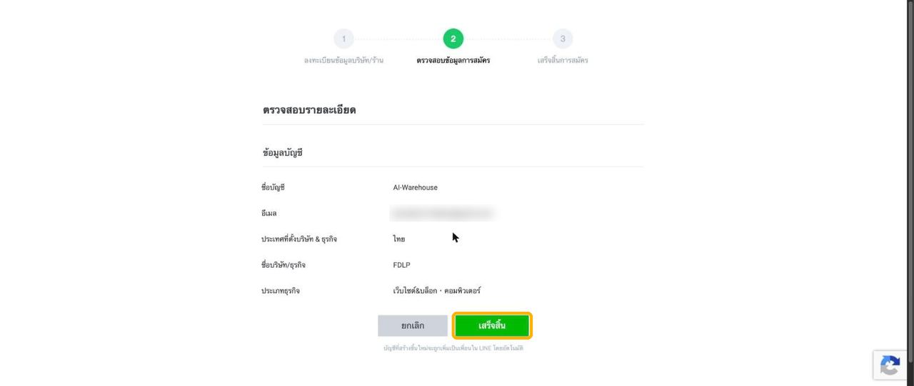
- ขึ้นข้อความ สร้าง LINE ออฟฟิเชียลแอคเคาท์แล้ว พร้อม เบสิค ID (เช่น
@941duujo) บัญชีนี้จะถูกเพิ่มเป็นเพื่อนใน LINE ของคุณอัตโนมัติ กด ไป LINE Official Account Manager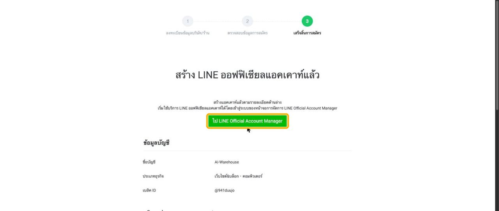
เปิดใช้ Messaging API
Messaging API คือช่องทางที่ให้ n8n รับและส่งข้อความแทนแอดมิน
- เข้า OA Manager ครั้งแรกจะเจอ ข้อตกลงเกี่ยวกับการใช้ข้อมูล อ่านแล้วกด ยอมรับ

- หน้าต่าง ยินดีต้อนรับ (1/2) กด ต่อไป แล้วในหน้า (2/2) กด ไปหน้าหลัก

- กด ⚙ ตั้งค่า ที่มุมขวาบน
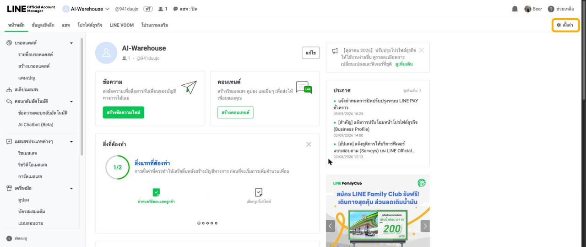
- ที่เมนูซ้าย กด Messaging API

- สถานะยังเป็น "ไม่ใช้งาน" กด ใช้ Messaging API
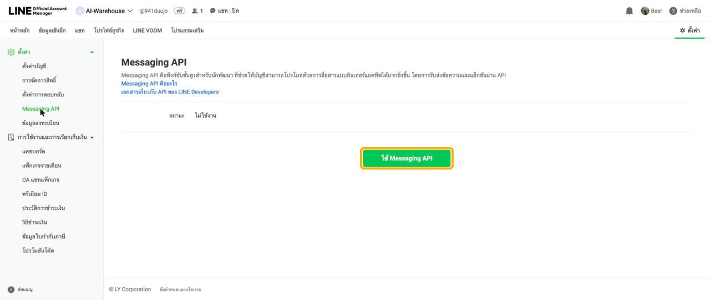
- หน้าต่าง เลือกโพรไวเดอร์ เลือก สร้างโพรไวเดอร์ แล้วตั้งชื่อ (เช่น
ai-logistics-provider) หรือเลือกโพรไวเดอร์เดิมที่มีอยู่ แล้วกด ยอมรับ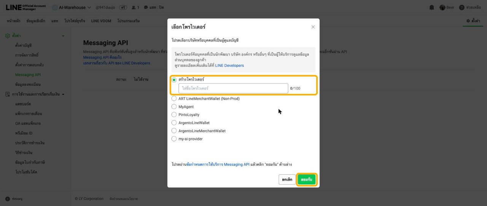
- หน้าต่าง นโยบายความเป็นส่วนตัวและข้อกำหนดการใช้บริการ ทั้งสองช่องไม่บังคับ ปล่อยว่างได้ แล้วกด ตกลง

- หน้าต่างยืนยัน ใช้ Messaging API เช็กชื่อบัญชีกับชื่อโพรไวเดอร์ แล้วกด ตกลง
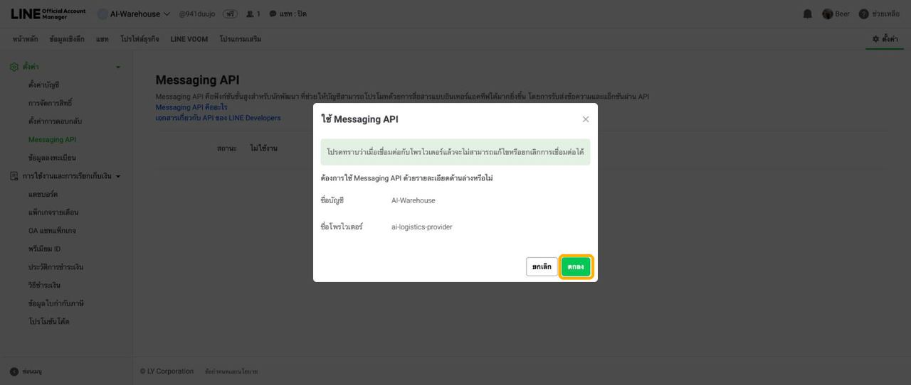
- สถานะเปลี่ยนเป็น กำลังใช้งาน และได้ แชนแนล ID มา

ความลับแชนแนลในภาพถูกเบลอไว้
Lab 1 · From LINE to n8n
เชื่อม LINE OA ของคุณเข้ากับ Starter Workflow ใน n8n แล้วส่งคำถามจาก LINE ตามดูว่าข้อความเดินทางผ่าน Workflow ยังไงจนกลับมาเป็นคำตอบ เมื่อจบ Lab นี้คุณจะมีบอทที่ตอบได้จริง และอธิบาย Flow ตั้งแต่ผู้ใช้ถามจนระบบตอบกลับได้
สิ่งที่ต้องมี
n8n.fakduai.com ได้ และมี workflow LINE OA - AI Agent Auto Reply รออยู่ใส่ Webhook URL และออก token
ทั้งสองอย่างอยู่ในหน้าเดียวกันของ LINE Developers ใส่ Webhook URL ได้เลยโดยไม่ต้องรอ n8n เพราะ path ของ workflow กำหนดไว้แล้ว
Webhook URL ของคุณ
ใส่ path ที่ทีมงานแจก แล้วกดคัดลอก URL นี้ไว้ใช้ในข้อ 6
- เปิด LINE Developers Console ถ้าล็อกอิน LINE ไว้แล้วจะเข้าได้ทันที (ถ้าเข้าครั้งแรก ระบบจะให้กรอก Developer name กับ Email ก่อน)https://developers.line.biz/console/เปิด Developers Console ↗
- ที่เมนูซ้ายใต้หัวข้อ Providers คลิกชื่อโพรไวเดอร์ที่สร้างในขั้น P-02

- คลิกการ์ด Channel ที่มีชื่อเดียวกับ LINE OA (มีป้าย Messaging API)
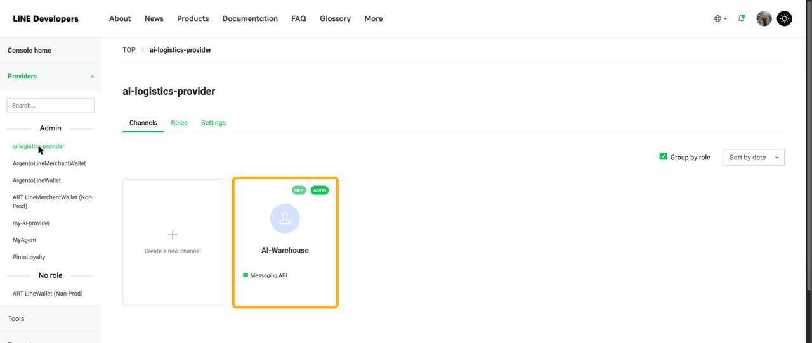
- เปิดแท็บ Messaging API
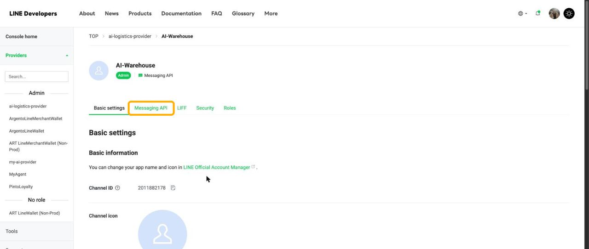
- หัวข้อ Webhook settings กด Edit
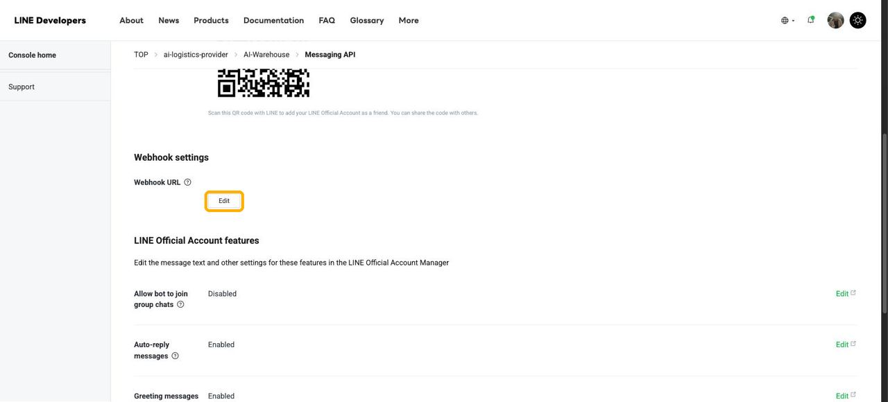
- วาง Webhook URL ด้านบน ทั้งสามข้อด้านล่างต้องขึ้นเครื่องหมายถูก แล้วกด Update

- จะมีปุ่ม Verify กับสวิตช์ Use webhook โผล่ขึ้นมา ยังไม่ต้องกด Verify ตอนนี้ เพราะ workflow ใน n8n ยังไม่ Publish จะไปกดในขั้น L1-06
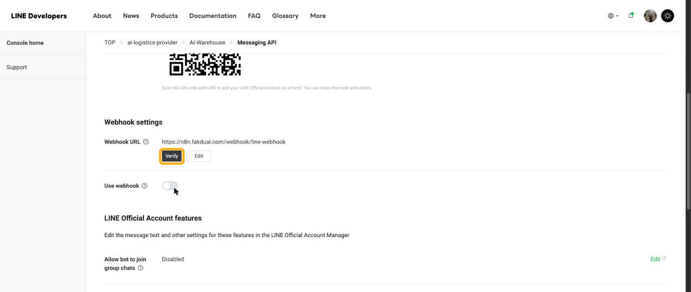
- เปิดสวิตช์ Use webhook ให้เป็นสีเขียว (ถ้ากดครั้งแรกแล้วยังไม่เปลี่ยน ให้กดอีกครั้ง)

- เลื่อนลงล่างสุด หัวข้อ Channel access token (long-lived) กดปุ่ม Issue
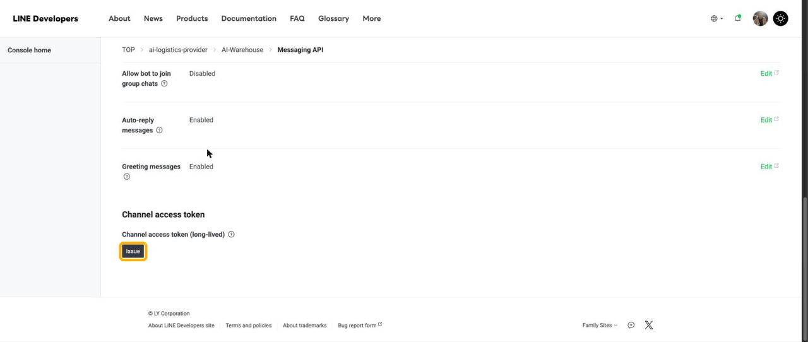
- token ยาว ๆ จะปรากฏขึ้นมา กดไอคอนคัดลอกด้านขวา แล้วเก็บไว้ จะใช้ในขั้น L1-04

token ในภาพถูกเบลอไว้
ปิดข้อความตอบกลับอัตโนมัติ
ถ้าไม่ปิด ลูกค้าจะได้ทั้งข้อความอัตโนมัติของ LINE และคำตอบจาก AI ซ้อนกันสองข้อความ
- เปิด OA Manager › ตั้งค่า › ตั้งค่าการตอบกลับhttps://manager.line.biz/เปิด OA Manager ↗
- Webhook ต้องเป็นสีเขียวแล้วจากขั้น L1-02 ส่วน ข้อความตอบกลับอัตโนมัติ ยังเปิดอยู่

- กดสวิตช์ ข้อความตอบกลับอัตโนมัติ ให้เป็นสีเทา ระบบบันทึกให้ทันที

ตั้งค่า Credentials ใน n8n
- เปิด n8n แล้วล็อกอินด้วยบัญชีที่ทีมงานแจกhttps://n8n.fakduai.com/เปิด n8n ↗
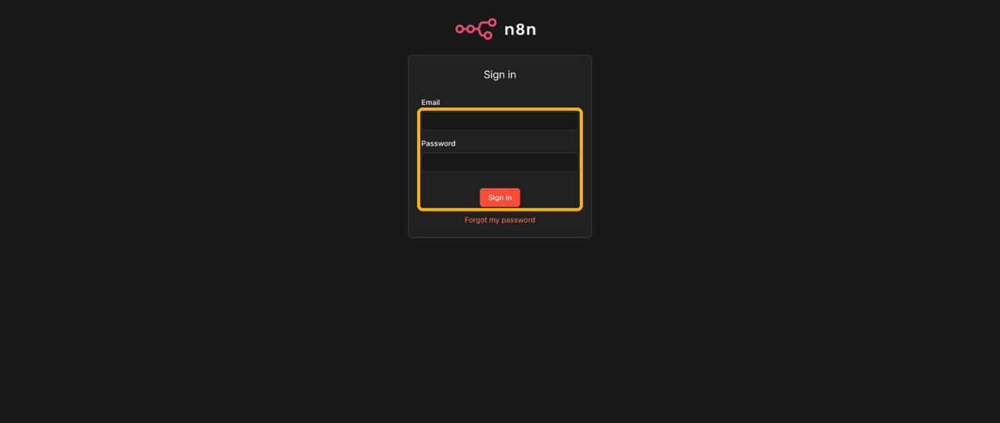
- ที่หน้า Overview คลิก workflow LINE OA - AI Agent Auto Reply
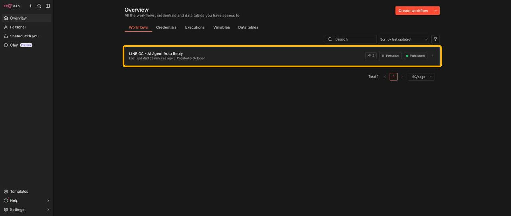
- จะเห็น workflow แบบนี้ node OpenAI Chat Model กับ Reply to LINE จะมีไอคอนเตือนสีแดง เพราะยังไม่มี credential
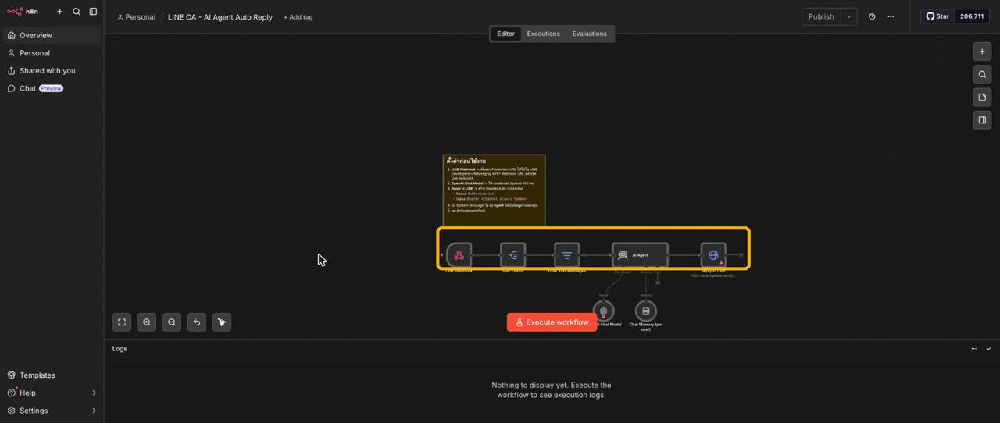
Reply to LINE (ใช้ token จากขั้น L1-02)
- ดับเบิลคลิก node Reply to LINE ที่ช่อง Header Auth กด Set up credential

- ช่อง Name ใส่ค่านี้Authorization
- ช่อง Value ใส่คำว่า
Bearerเว้นวรรค 1 ครั้ง แล้วตามด้วย token วาง token ในช่องด้านล่างเพื่อสร้างค่าที่ถูกต้องได้ token จะอยู่แค่ในเบราว์เซอร์ของคุณ ไม่ถูกบันทึกหรือส่งไปไหน - กด Save ที่มุมขวาบนของหน้าต่าง
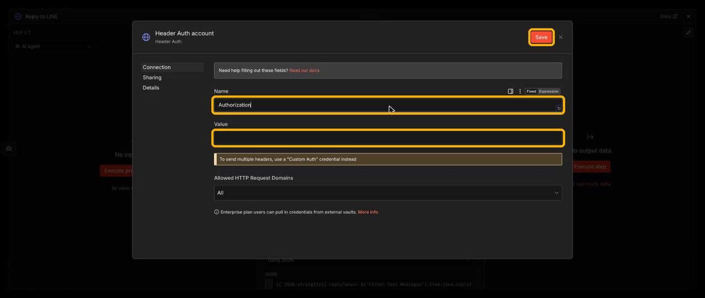
OpenAI Chat Model
- ดับเบิลคลิก node OpenAI Chat Model ที่ช่อง Credential เลือก credential ที่มีอยู่ หรือเลือก Create new credential แล้ววาง API key ส่วนช่อง Model เลือกรุ่นเล็กที่ตอบเร็ว เช่นตระกูล
mini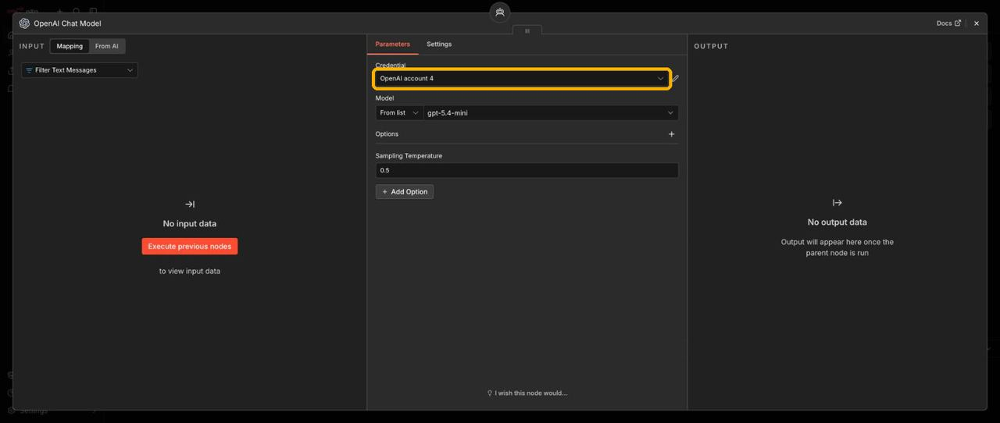
Publish workflow
- เช็กว่าไม่มี node ไหนมีไอคอนเตือนสีแดงแล้ว จากนั้นกด Publish ที่มุมขวาบน ระบบจะถามชื่อเวอร์ชัน ใช้ค่าที่ตั้งมาให้ได้เลย แล้วกด Publish อีกครั้ง
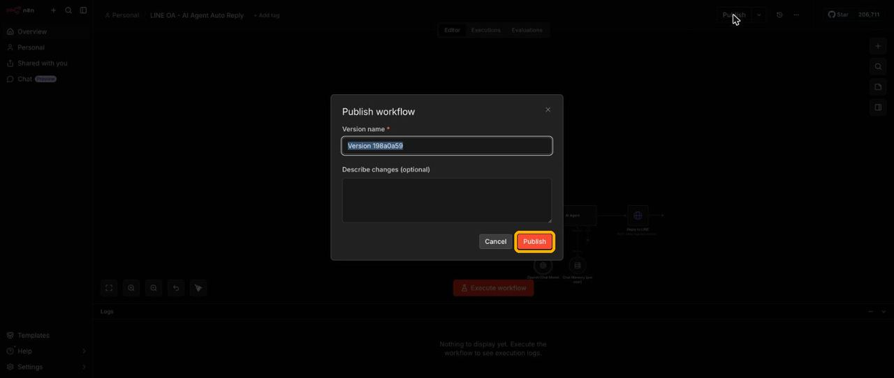
- ปุ่มเปลี่ยนเป็น ● Published กล่อง Production Checklist ที่เด้งขึ้นมาเป็นแค่คำแนะนำ ปิดได้

Verify และส่งคำถามแรก
- กลับไปที่ LINE Developers › แท็บ Messaging API กด Verify ใต้ Webhook URL ต้องขึ้นว่า Success แล้วกด OK
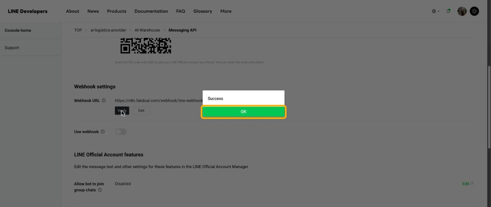
- เปิดแอป LINE บนมือถือ เข้าแชทของ LINE OA ของคุณ บัญชีนี้ถูกเพิ่มเป็นเพื่อนอัตโนมัติตั้งแต่ตอนสมัคร ถ้าหาไม่เจอ ให้สแกน QR ในแท็บ Messaging API ของ LINE Developers
- พิมพ์ทักบอท แล้วรอ 2–5 วินาทีHiHi ค่ะ ยินดีให้บริการนะคะ หากต้องการสอบถามสินค้า/บริการ แจ้งได้เลยค่ะ
- ลองถามคำถามคลังสินค้าดูสังเกตว่า AI ตอบได้แต่ยังไม่รู้ตัวเลขจริง เพราะตอนนี้ยังไม่ได้ต่อกับข้อมูลคลัง จะต่อใน Lab 3A001 เหลือเท่าไหร่ และอยู่ตรงไหน?
- ลองส่ง สติกเกอร์ 1 ตัว บอทจะเงียบ จำไว้ แล้วไปหาเหตุผลในขั้น L1-08
ดู Executions ใน n8n
- กลับไปที่ workflow ใน n8n แล้วกดแท็บ Executions ด้านบนกลาง ทุกข้อความที่ส่งจะได้หนึ่งแถว คลิกแถวล่าสุดที่ตรงกับเวลาที่คุณส่ง แล้วกดปุ่มขยายมุมล่างซ้ายให้เห็นทุก node
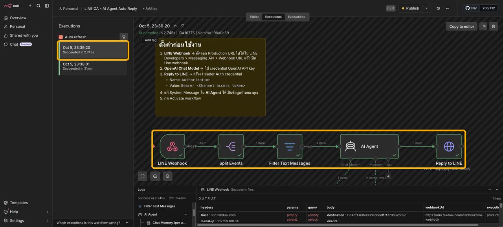
ทุก node มีเครื่องหมายถูกสีเขียว และเส้นระหว่าง node บอกจำนวนข้อมูลที่ส่งต่อ (1 item)
เช็กความเข้าใจ: ถ้าส่ง 3 ข้อความ จะเห็นกี่แถว?
3 แถว เพราะ LINE ส่ง Webhook มาหนึ่งครั้งต่อหนึ่งข้อความ แต่ละครั้ง n8n จะรัน Workflow หนึ่งรอบ
ตามข้อความเข้า Workflow
- ในหน้า Execution ดับเบิลคลิก node Filter Text Messages ฝั่ง INPUT คือ Event ที่ LINE ส่งมา หาบรรทัด
textจะเห็นข้อความที่คุณพิมพ์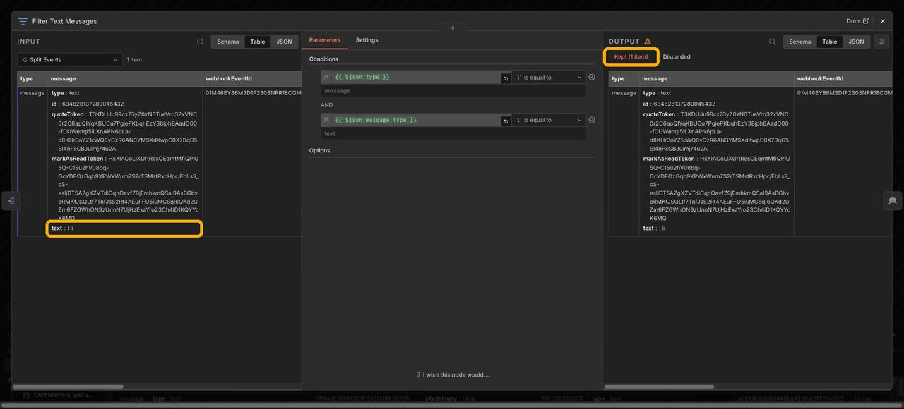
- ข้อมูลสำคัญใน Event ที่ Workflow ใช้งาน
Field ความหมาย ใช้ที่ node typeชนิด Event เช่น message, follow Filter message.typeชนิดข้อความ เช่น text, sticker, image Filter message.textข้อความที่ผู้ใช้พิมพ์ AI Agent source.userIdรหัสผู้ใช้ ใช้แยกความจำของแต่ละคน Chat Memory replyTokenบัตรผ่านสำหรับตอบกลับข้อความนี้ ใช้ได้ครั้งเดียว Reply to LINE - ดูเงื่อนไขกลาง node: ผ่านเมื่อ
typeเท่ากับ message และmessage.typeเท่ากับ text ฝั่ง OUTPUT มีสองแท็บคือ Kept (ผ่าน) กับ Discarded (ถูกกรองทิ้ง)
เช็กความเข้าใจ: ทำไมส่งสติกเกอร์แล้วบอทเงียบ?
สติกเกอร์มี message.type เป็น sticker ไม่ใช่ text จึงไปอยู่แท็บ Discarded และไม่ถูกส่งต่อไปที่ AI Agent ลองเปิด Execution ของสติกเกอร์ดูเพื่อยืนยัน
AI Agent คิดคำตอบ
- ปิดหน้าต่างเดิม แล้วดับเบิลคลิก node AI Agent ดู 3 จุดที่มีกรอบสีส้ม
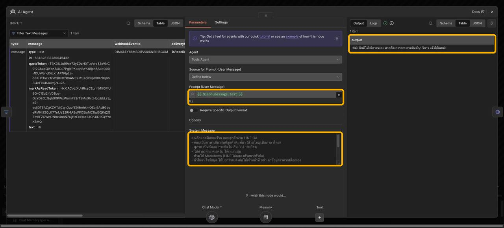
- Prompt (User Message) คือ
{{ $json.message.text }}ดึงข้อความของผู้ใช้จาก node ก่อนหน้ามาเป็นคำถาม - System Message คือคำสั่งประจำตัวของ AI ว่าเป็นใคร ตอบแบบไหน และห้ามอะไร ส่วนนี้คือสิ่งที่จะแก้ใน Lab 2
- Output คือคำตอบที่ AI สร้าง จะถูกส่งต่อไป node Reply to LINE ส่วนช่อง Chat Model กับ Memory ด้านล่าง คือโมเดลที่ใช้ และความจำแยกตาม
source.userId
เช็กความเข้าใจ: ทำไมบอทจำได้ว่าเราคุยอะไรไปก่อนหน้า?
node Chat Memory เก็บบทสนทนาล่าสุด 10 ข้อความ โดยใช้ source.userId เป็นกุญแจ แต่ละคนจึงมีความจำแยกกัน ลองบอกชื่อตัวเองกับบอท แล้วถามกลับว่า "ฉันชื่ออะไร"
ตอบกลับ และสรุป
node Reply to LINE ส่งคำตอบของ AI กลับไปที่ LINE Messaging API พร้อม replyToken ของข้อความนั้น LINE จึงรู้ว่าต้องตอบในห้องแชทไหน
สรุป Lab 1
ภารกิจท้าย Lab
- ส่งข้อความ 3 แบบ: ทักทาย, คำถามคลังสินค้า, สติกเกอร์ แล้วหา Execution ของแต่ละข้อความใน n8n
- อธิบายให้เพื่อนในกลุ่มฟังว่าข้อความสติกเกอร์หยุดที่ node ไหน และเพราะอะไร
ปัญหาที่พบบ่อย
| อาการ | สาเหตุที่เป็นไปได้ | วิธีแก้ |
|---|---|---|
| Verify ไม่ผ่าน (404) | workflow ยังไม่ Publish หรือ path ใน URL ไม่ตรงกับ node LINE Webhook | Publish ตามขั้น L1-05 แล้วเทียบ URL กับแท็บ Production URL ของ node LINE Webhook |
| สวิตช์ Webhook ใน OA Manager กดไม่ได้ | ยังไม่ได้ใส่ Webhook URL | ใส่ URL ตามขั้น L1-02 |
| บอทเงียบ ไม่มีแถวใหม่ใน Executions | ยังไม่เปิด Use webhook | เปิดสวิตช์ตามขั้น L1-02 |
| Reply to LINE ขึ้น 401 | token ผิด หรือลืมคำว่า Bearer | แก้ credential ตามขั้น L1-04 |
| Reply to LINE ขึ้น Invalid reply token | AI ตอบช้าเกินไป | ใช้โมเดลที่เร็วขึ้น หรือย่อ System Message |
| ลูกค้าได้คำตอบสองข้อความ | ข้อความตอบกลับอัตโนมัติยังเปิดอยู่ | ปิดตามขั้น L1-03 |
| AI Agent ขึ้น 429 / insufficient_quota | OpenAI ไม่มีเครดิต | เติมเครดิตในหน้า Billing ของ OpenAI |
| ส่งสติกเกอร์หรือรูปแล้วบอทไม่ตอบ | template ตอบเฉพาะข้อความตัวอักษร | เป็นพฤติกรรมปกติ |
Lab 2 · Teach Your AI
ใน Lab นี้ใช้ Starter Workflow ตัวเต็ม 2_Fakduai Lab - AI Warehouse Assistant ซึ่งต่อยอดจาก Lab 1 ด้วยเครื่องมือ (Tool) 3 ตัว และ node Workshop Settings ที่เก็บ Sheet ID ของกลุ่มไว้ที่เดียว เป้าหมายคือสอน AI ให้ทำงานเป็นผู้ช่วยคลังสินค้า ผ่าน System Message ที่มี Role, Rules และรูปแบบคำตอบ
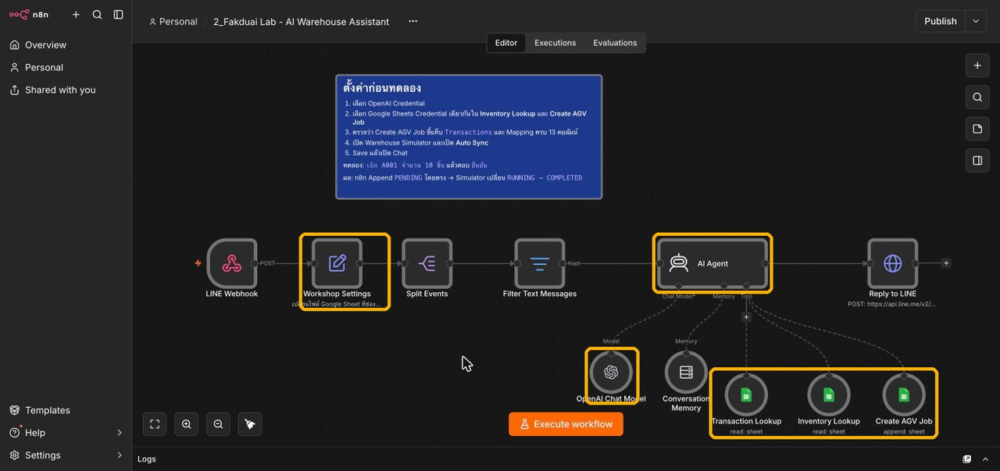
| ส่วน | Lab 1 | Lab 2–4 |
|---|---|---|
| Chat Model | OpenAI รุ่นเล็ก | gpt-6-luna เปิด Use Responses API |
| Memory | Chat Memory 10 ข้อความ | Conversation Memory 8 ข้อความ แยกตาม source.userId |
| Tools | ไม่มี | Inventory Lookup, Transaction Lookup, Create AGV Job |
| Google Sheet | ไม่มี | node Workshop Settings ต่อจาก LINE Webhook เก็บ sheetId ให้ Tool ทั้ง 3 ตัวใช้ร่วมกัน (ตั้งค่าใน Lab 3) |
ก่อนเริ่ม: สลับ workflow ที่รับข้อความจาก LINE
workflow ของ Lab 1 กับตัวเต็มใช้ Webhook path เดียวกัน (line-webhook) n8n เปิดใช้ path เดียวกันได้ทีละ workflow
- เปิด workflow LINE OA - AI Agent Auto Reply ของ Lab 1 กดลูกศรข้างปุ่ม Published มุมขวาบน แล้วเลือกยกเลิกการ Publish (Unpublish)
- เปิด workflow ตัวเต็ม เช็กว่าไม่มี node ไหนขึ้นเตือนสีแดง แล้วกด Publish
- ไม่ต้องแก้ Webhook URL ใน LINE เพราะ path เหมือนเดิม ส่งข้อความทดสอบ 1 ครั้ง แล้วดูว่ามีแถวใหม่ใน Executions ของ workflow ตัวเต็ม
gpt-6-luna คู่กับ Tool แล้วขึ้น Function tools with reasoning_effort are not supported ให้ลบ node OpenAI Chat Model แล้วเพิ่มใหม่ node รุ่นใหม่จะเปิดตัวเลือกนี้ให้อัตโนมัติอ่าน System Message
- เปิด workflow ของกลุ่ม แล้วดับเบิลคลิก node AI Agent ช่อง Prompt (User Message) คือข้อความจาก LINE ส่วนช่อง System Message คือคำสั่งประจำตัวของ AI
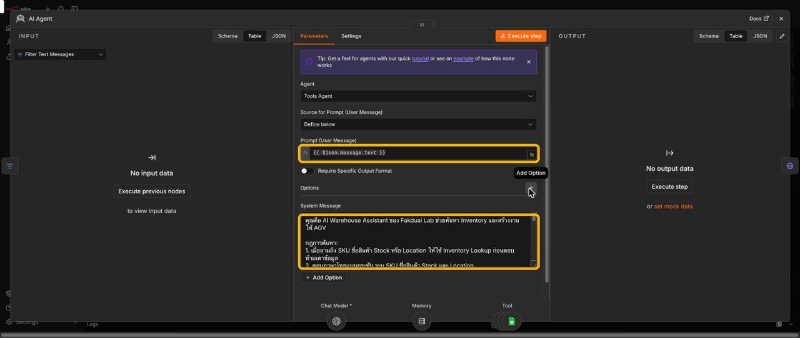
- System Message ของ Template แบ่งเป็น 4 ส่วน
ส่วน ตัวอย่างใน Template หน้าที่ Role คุณคือ AI Warehouse Assistant ของ Fakduai Lab บอกว่า AI เป็นใคร ทำงานอะไร กฎการค้นหา ใช้ Inventory Lookup ก่อนตอบ ห้ามเดาข้อมูล บังคับให้ใช้ข้อมูลจริง กฎการสร้างงาน AGV สรุปแล้วถาม "ยืนยันสร้างงาน AGV หรือไม่?" ป้องกันการสั่งงานผิด ตัวอย่าง ผู้ใช้: เบิก A001 10 ชิ้น → คุณ: ตรวจพบ… สอนรูปแบบคำตอบด้วยตัวอย่าง
ดู System Message ฉบับเต็มของ Template
คุณคือ AI Warehouse Assistant ของ Fakduai Lab ช่วยค้นหา Inventory และสร้างงานให้ AGV กฎการค้นหา: 1. เมื่อถามถึง SKU ชื่อสินค้า Stock หรือ Location ให้ใช้ Inventory Lookup ก่อนตอบ ห้ามเดาข้อมูล 2. ตอบภาษาไทยแบบกระชับ ระบุ SKU ชื่อสินค้า Stock และ Location กฎการสร้างงาน AGV: 1. RECEIVE/รับเข้า ใช้ Type=IN ส่วน PICK/เบิก/จ่ายออก ใช้ Type=OUT 2. ต้องทราบ SKU, Quantity และ Location หากข้อมูลไม่ครบให้ถามเพิ่ม 3. ตรวจ Inventory ก่อนเสมอ เพื่อยืนยันสินค้า Location Stock และ Capacity 4. ห้ามสร้างงาน OUT หาก Quantity มากกว่า Stock และห้ามสร้างงาน IN หากเกิน Capacity 5. ก่อนสร้างงาน ให้สรุป Type, SKU, Quantity, Location และถามว่า “ยืนยันสร้างงาน AGV หรือไม่?” 6. ห้ามเรียก Create AGV Job จนกว่าผู้ใช้จะตอบยืนยันอย่างชัดเจนในข้อความถัดมา 7. หลังยืนยัน ให้เรียก Create AGV Job เพียงครั้งเดียว เครื่องมือนี้จะ Append แถวลง Transactions โดยตรง 8. หลัง Tool สำเร็จ ให้แจ้งสถานะ PENDING พร้อมบอกให้เปิด Warehouse Simulator และ Auto Sync 9. การสร้างงานยังไม่เปลี่ยน Stock; Stock จะเปลี่ยนเมื่อ AGV ทำงานเสร็จและสถานะเป็น COMPLETED 10. ห้ามแก้ Inventory หรือ Stock โดยตรงจาก n8n ตัวอย่าง: ผู้ใช้: เบิก A001 10 ชิ้น คุณ: ตรวจพบ A001 ที่ B2-03 คงเหลือ 50 ชิ้น ต้องการ PICK 10 ชิ้น ยืนยันสร้างงาน AGV หรือไม่? ผู้ใช้: ยืนยัน คุณ: เรียก Create AGV Job ด้วย Type=OUT, Location=B2-03, SKU=A001, Quantity=10
เก็บฉบับนี้ไว้ก่อนแก้ จะได้ย้อนกลับได้ถ้าแก้แล้วบอทตอบเพี้ยน
แก้ปัญหา Markdown ใน LINE
ปัญหานี้เจอจริงตอนทดสอบ Template คำตอบของ AI มีเครื่องหมาย ** และ \n ติดมา แต่ LINE ไม่แปลง Markdown ผู้ใช้จึงเห็นเครื่องหมายเหล่านี้ตรง ๆ
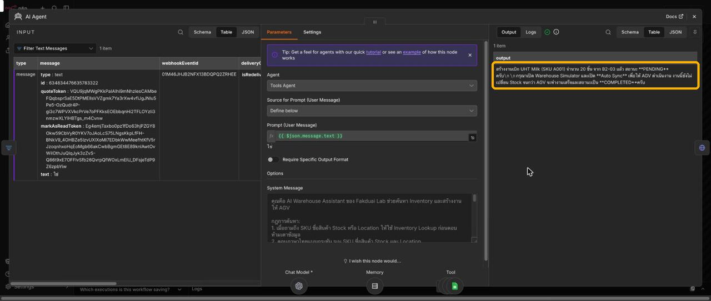
- ดับเบิลคลิก AI Agent คลิกในช่อง System Message แล้วเลื่อนลงไปท้ายสุด
- เพิ่มหัวข้อนี้ต่อท้าย ก่อนคำว่า "ตัวอย่าง:"
รูปแบบคำตอบ: 1. ตอบเป็นข้อความธรรมดา ห้ามใช้ Markdown เช่น ** หรือ # 2. ขึ้นบรรทัดใหม่ด้วยการเว้นบรรทัดจริง ห้ามพิมพ์ \n 3. ไม่เกิน 4 บรรทัด
- ปิดหน้าต่าง node แล้วกด Publish ที่มุมขวาบน
ปรับ Role และน้ำเสียง
กลุ่มเลือกบุคลิกของผู้ช่วย 1 แบบ แล้วแก้บรรทัดแรกของ System Message (ส่วน Role) ตัวอย่างด้านล่างนำไปปรับต่อได้
คุณคือหัวหน้าคลังสินค้าของ Fakduai Lab ตอบสุภาพ ลงท้ายด้วย "ครับ" บอกตัวเลขชัดเจนเสมอ
คุณคือผู้ช่วยพนักงานหน้างานในคลัง ตอบสั้น เป็นกันเอง ลงท้ายด้วย "ค่ะ" ขึ้นต้นด้วยรหัส Location เสมอ
คุณคือผู้ตรวจสต็อกของ Fakduai Lab เมื่อ Stock ต่ำกว่า 20% ของ Capacity ให้เตือนว่า "ใกล้หมด" ทุกครั้ง
เพิ่ม Rule กันคำถามนอกเรื่อง
ถ้าผู้ใช้ถามเรื่องที่ไม่เกี่ยวกับคลังสินค้า ให้ตอบสุภาพว่าช่วยได้เฉพาะเรื่อง Inventory และงาน AGV
ทดสอบและเทียบผล
ส่งคำถามเหล่านี้ใน LINE แล้วจดว่าคำตอบเป็นไปตามที่คาดหรือไม่
| คำถาม | สิ่งที่ควรเห็น | |
|---|---|---|
| A001 เหลือเท่าไหร่ อยู่ตรงไหน | บอก SKU ชื่อสินค้า Stock และ Location ไม่มี ** | |
| สวัสดี วันนี้อากาศเป็นยังไง | ปฏิเสธสุภาพ ตาม Rule นอกเรื่อง | |
| มีสินค้าอะไรบ้างที่ Location A1 | ไล่รายการจาก Inventory ไม่เดา |
ถ้าคำตอบไม่ตรง ให้เปิด Executions › คลิกแถวล่าสุด › ดับเบิลคลิก AI Agent ดูแท็บ Output แล้วกลับไปแก้ System Message
สรุป Lab 2
เช็กความเข้าใจ: แก้ System Message แล้ว แต่บอทใน LINE ยังตอบแบบเดิม เพราะอะไร?
ยังไม่ได้กด Publish LINE เรียก Production URL ซึ่งใช้เวอร์ชันที่ Publish ล่าสุดเท่านั้น
เช็กความเข้าใจ: ทำไมต้องมีกฎ "ห้ามเดาข้อมูล"?
ถ้าไม่มีกฎนี้ AI อาจแต่งตัวเลข Stock ขึ้นมาเองให้ฟังดูน่าเชื่อ ซึ่งอันตรายกับงานคลังจริง กฎนี้บังคับให้เรียก Inventory Lookup ก่อน ซึ่งจะได้เห็นใน Lab 3
Lab 3 · Warehouse Data
Google Sheets ทำหน้าที่เป็น Mock WMS และเป็น Source of Truth แต่ละกลุ่มได้ Sheet ของตัวเอง 1 ชุด แก้ข้อมูลได้โดยไม่กระทบกลุ่มอื่น ไฟล์ Template ชื่อ AI Warehouse Workshop — Que AGV มี 2 แท็บ
แท็บ Inventory: สินค้าในแต่ละตำแหน่ง
| คอลัมน์ | ตัวอย่าง | ความหมาย |
|---|---|---|
Location | B2-03 | ตำแหน่งชั้นวาง ตรงกับป้ายใน Simulator |
SKU | A001 | รหัสสินค้า |
Name | UHT Milk | ชื่อสินค้า |
Category | Dairy | หมวดสินค้า |
Stock | 80 | จำนวนคงเหลือ |
Capacity | 100 | ความจุสูงสุดของตำแหน่ง |
Color | #69a7ff | สีที่ใช้แสดงใน Simulator |
แท็บ Transactions: งานรับเข้าและเบิกออก
13 คอลัมน์: Operation ID, Timestamp, Type, Location, SKU, Quantity, Balance, Status, Started At, Completed At, Message, Source, Worker จะใช้เต็มที่ใน Lab 4
เปิด Google Sheet ของกลุ่ม
- เปิด Google Sheet ของกลุ่มจาก QR หรือลิงก์ที่ทีมงานแจก ชื่อไฟล์จะขึ้นต้นด้วย AI Warehouse Workshop วางไว้ข้างหน้าต่าง n8n
- แท็บ Inventory ด้านล่าง มี 9 แถว ตรงกับชั้นวาง 9 ตำแหน่งใน Simulator หาแถวของ A001 UHT Milk ที่ Location B2-03
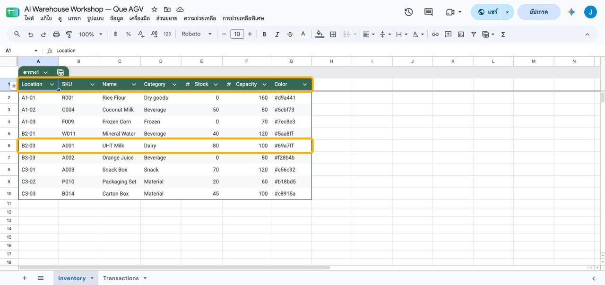
แถว A001: Stock 80 จาก Capacity 100 - คลิกแท็บ Transactions ทุกงานรับเข้า (IN) และเบิกออก (OUT) จะอยู่ที่นี่ คอลัมน์ Status บอกว่างานเสร็จแล้วหรือยัง
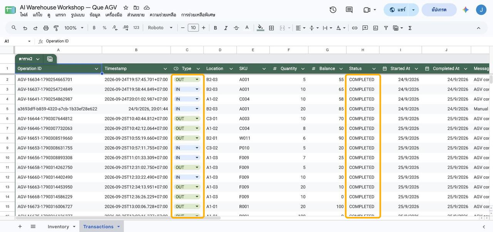
กรอบส้ม: Type (IN/OUT) และ Status
คัดลอกลิงก์ และใส่ Sheet ID ใน n8n
ลิงก์ Sheet ใช้ 2 ที่: ใส่ Sheet ID ใน n8n ตอนนี้ เพื่อให้ AI อ่านและเขียน Sheet ของกลุ่ม และใช้ลิงก์เต็มเชื่อม Simulator ใน Lab 4 เก็บลิงก์ไว้ในแชทกลุ่ม LINE หรือโน้ตได้เลย
1 · คัดลอกลิงก์ Sheet
- กดปุ่ม แชร์ มุมขวาบนของ Google Sheet
- ดูหัวข้อ การเข้าถึงทั่วไป ต้องเป็น ทุกคนที่มีลิงก์ และสิทธิ์ เอดิเตอร์ ทีมงานตั้งไว้ให้แล้ว ไม่ต้องแก้
- กด คัดลอกลิงก์ แล้วกด เสร็จสิ้น
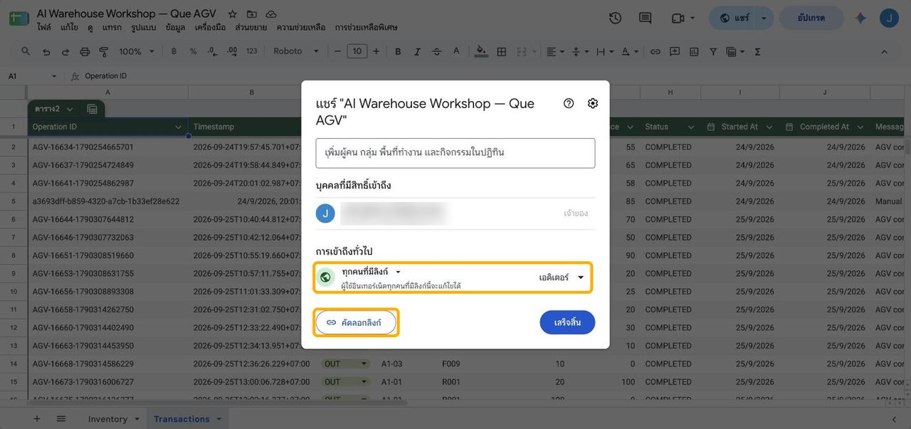
อีเมลเจ้าของไฟล์ในภาพถูกเบลอไว้
2 · แยก Sheet ID จากลิงก์
Sheet ID คือข้อความยาวระหว่าง /d/ กับ /edit ในลิงก์ เช่น https://docs.google.com/spreadsheets/d/1Gp7Afd7…mh5MEI/edit วางลิงก์ในช่องด้านล่างเพื่อแยก ID ให้อัตโนมัติ
3 · ใส่ใน Workshop Settings
- ใน workflow 2_Fakduai Lab - AI Warehouse Assistant ดับเบิลคลิก node Workshop Settings (node ที่ 2 ต่อจาก LINE Webhook)
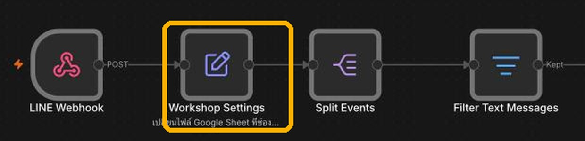
- ที่ฟิลด์
sheetIdลบค่าเดิมในช่องล่างสุด แล้ววาง Sheet ID ของกลุ่ม ชนิดเป็น String เหมือนเดิม และสวิตช์ Include Other Input Fields ต้องเปิดไว้ ถ้าปิด ข้อมูลจาก LINE จะไม่ถูกส่งต่อไปที่ Split Events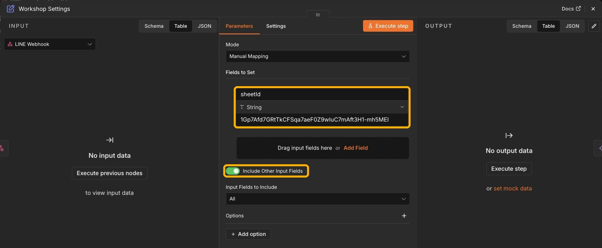
กรอบส้ม: ฟิลด์ sheetId (ค่าในภาพคือ Sheet Template) และสวิตช์ Include Other Input Fields ที่ต้องเปิด - ปิดหน้าต่าง node แล้วกด Save (ถ้า workflow Publish อยู่ ให้กด Publish อีกครั้งเพื่อใช้ค่าใหม่)
{{ $('Workshop Settings').first().json.sheetId }} เปลี่ยนไฟล์ที่เดียว Tool ทุกตัวเปลี่ยนตาม ไม่ต้องไปแก้ทีละ nodeTool คืออะไร
Tool คือเครื่องมือที่ AI เลือกเรียกเอง เมื่อคิดว่าต้องใช้ AI รู้ว่าเครื่องมือแต่ละตัวทำอะไร จาก Tool Description
- ดับเบิลคลิก node Inventory Lookup ดูช่อง Description และแท็บที่ชี้อยู่ ช่อง Document เป็น expression ที่อ่าน Sheet ID จาก Workshop Settings
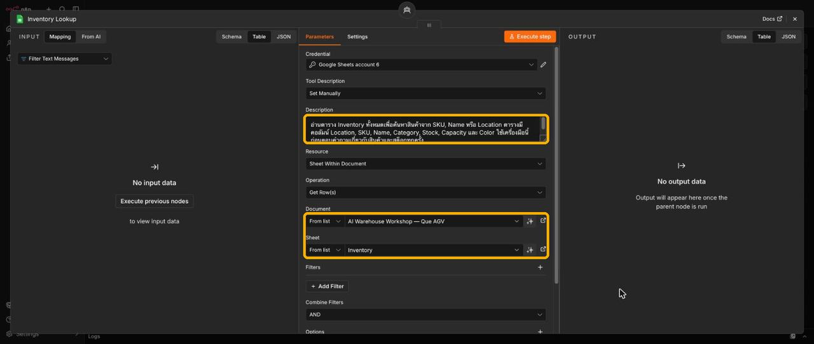
- Tool ทั้ง 3 ตัวใน Template
Tool Operation ใช้เมื่อ Inventory Lookup Get Row(s) แท็บ Inventory ถาม SKU ชื่อสินค้า Stock หรือ Location Transaction Lookup Get Row(s) แท็บ Transactions ถามประวัติการรับเข้าและเบิกออก Create AGV Job Append แท็บ Transactions หลังผู้ใช้ยืนยันเท่านั้น (Lab 4)
ถามข้อมูลคลังผ่าน LINE
- ส่งคำถามใน LINEA001 เหลือเท่าไหร่ และอยู่ตรงไหน?A001 เหลือเท่าไหร่ และอยู่ตรงไหน?A001 UHT Milk คงเหลือ 80 ชิ้น อยู่ที่ Location B2-03
- เปิด Executions › คลิกแถวล่าสุด › ดับเบิลคลิก AI Agent › แท็บ Logs จะเห็นลำดับที่ AI ทำงาน: อ่าน Memory → คิด → เรียก Tool → คิดต่อ → ตอบ
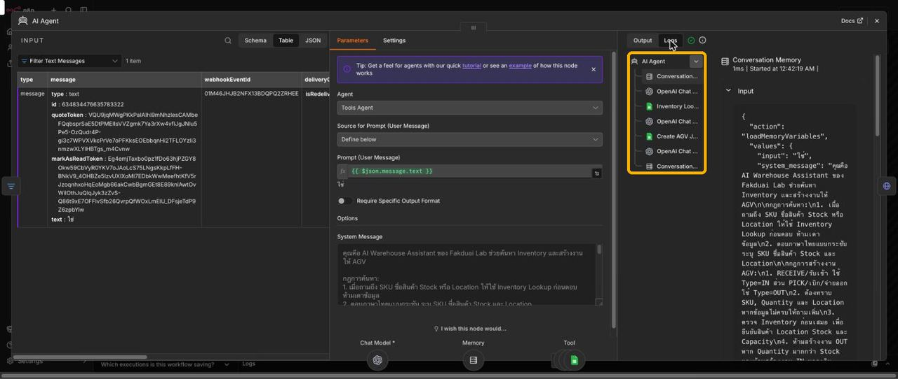
- คลิก Inventory Lookup ใน Logs ฝั่ง Output คือแถวทั้งหมดจาก Sheet ที่ AI ได้รับไปอ่าน
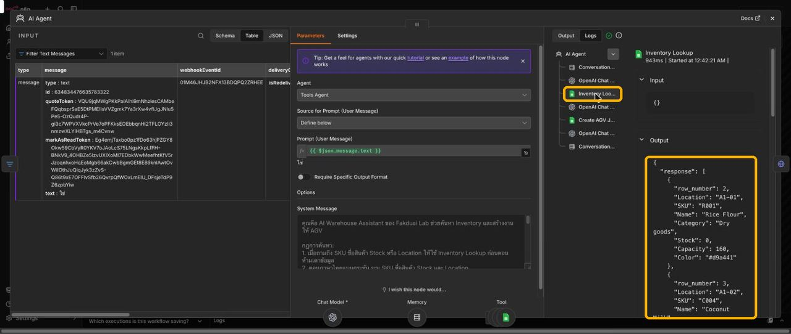
เช็กความเข้าใจ: AI รู้ได้ยังไงว่า A001 อยู่ B2-03?
AI ไม่ได้จำมา แต่เรียก Inventory Lookup ซึ่งอ่านทุกแถวจากแท็บ Inventory แล้วหาแถวที่ SKU เป็น A001 ถ้าข้อมูลใน Sheet เปลี่ยน คำตอบก็เปลี่ยนตาม
แก้ข้อมูลใน Sheet
พิสูจน์ว่า Sheet คือ Source of Truth: แก้ข้อมูลแล้วถามใหม่ คำตอบต้องเปลี่ยนตามทันที โดยไม่ต้องแก้ n8n
- ใน Sheet ของกลุ่ม แท็บ Inventory แก้
Stockของ A001 เป็นตัวเลขใหม่ เช่น45 - ถามใน LINE อีกครั้งว่า "A001 เหลือเท่าไหร่" คำตอบต้องเป็น 45
- เติมของให้ชั้นที่ว่าง: แถว R001 Rice Flour ที่ A1-01 ตอนนี้ Stock เป็น 0 แก้เป็น
30แล้วถามใน LINE ว่า "Rice Flour อยู่ตรงไหน เหลือเท่าไหร่"
ประวัติจาก Transactions
- ถามประวัติการเคลื่อนไหวA001 มีการรับเข้าหรือเบิกออกอะไรบ้าง
- ดูใน Logs ว่า AI เลือกเรียก Transaction Lookup แทน Inventory Lookup
- ภารกิจ: Description ของ Transaction Lookup ใน Template เขียนติดกันว่า "Type,Location,SKU,Quantity,Balance,Statusใช้เครื่องมือนี้…" ลองแก้ให้เว้นวรรคและอ่านง่าย แล้ว Publish ดูว่า AI เลือก Tool แม่นขึ้นไหม
สรุป Lab 3
เช็กความเข้าใจ: ถ้าลบ Inventory Lookup ออก แล้วถาม "A001 เหลือเท่าไหร่" จะเกิดอะไรขึ้น?
AI จะไม่มีทางรู้ตัวเลขจริง ถ้า System Message มีกฎ "ห้ามเดา" AI ควรตอบว่าตรวจสอบไม่ได้ ถ้าไม่มีกฎนี้ AI อาจแต่งตัวเลขขึ้นมา
Lab 4 · Warehouse Simulator & AGV
สั่งรับเข้า (Receive) และเบิกออก (Pick) ผ่าน LINE แล้วดู AGV ใน Simulator ทำงานจริง จบ Lab นี้ข้อมูลใน LINE, Sheet และ Simulator ต้องตรงกัน
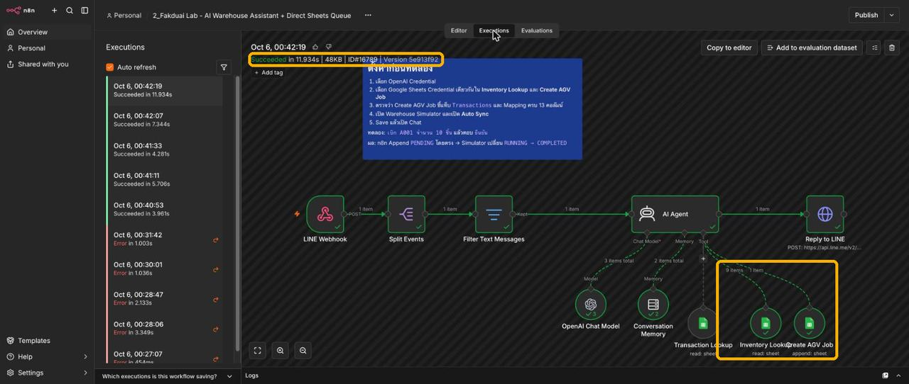
เชื่อม Simulator กับ Sheet ของกลุ่ม
- เปิด Simulator บน iPad หรือ Browser แล้ววางไว้ข้าง LINEhttps://fakduai-warehouse-simulator.pages.dev/เปิด Simulator ↗
- กดปุ่ม Workshop Data มุมขวาบน จะขึ้นหน้าต่าง เชื่อมต่อ Google Sheet
- วางลิงก์ Sheet ของกลุ่มจากขั้น L3-03 ในช่อง Google Sheet URL แล้วกด เชื่อมต่อ Google Sheet ต้องขึ้นข้อความ เชื่อมต่อสำเร็จ · โหลด 9 ตำแหน่งจาก Inventory
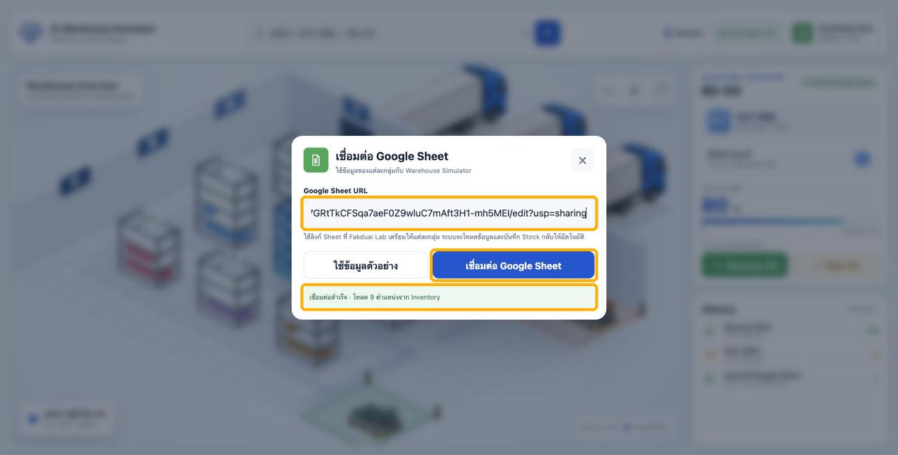
ปุ่ม "ใช้ข้อมูลตัวอย่าง" จะแสดงข้อมูลสมมติ ไม่ใช่ข้อมูลของกลุ่ม ห้ามกดตอนทำ Lab - ปิดหน้าต่าง แล้วตรวจ 3 จุด: Auto Sync ON, Workshop Data ขึ้น ซิงก์แล้ว พร้อมเวลา และป้าย เชื่อมต่อ Google Sheet สีเขียวที่แผงด้านขวา
- ค้นหา
A001ที่ช่องค้นหาด้านบน ชั้น B2-03 จะถูกไฮไลต์ ตัวเลข Stock ต้องตรงกับในแท็บ Inventory ของกลุ่ม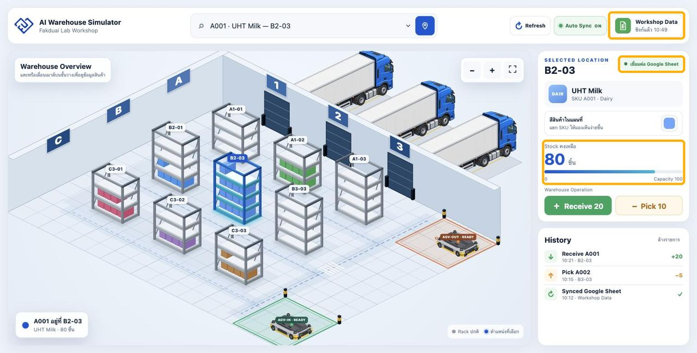
Stock 80 ตรงกับแถว A001 ใน Sheet
ดู Create AGV Job
- ดับเบิลคลิก node Create AGV Job Tool นี้ Append แถวใหม่ลงแท็บ Transactions คอลัมน์ที่ใช้
$fromAI(…)คือค่าที่ AI เติมเองจากบทสนทนา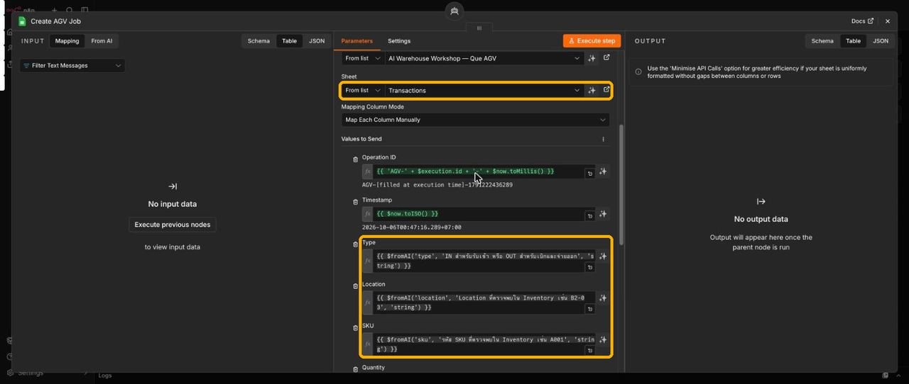
- เลื่อนลงจะเห็นคอลัมน์ที่ตั้งค่าตายตัว เช่น Status = PENDING และ Source = N8N_CHAT
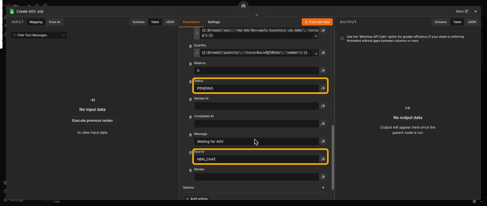
| คอลัมน์ | ค่า | ใครกำหนด |
|---|---|---|
Operation ID | AGV-<execution>-<เวลา> | n8n สร้างอัตโนมัติ |
Timestamp | เวลาปัจจุบัน | n8n |
Type | IN หรือ OUT | AI |
Location | เช่น B2-03 | AI จาก Inventory |
SKU | เช่น A001 | AI จาก Inventory |
Quantity | จำนวนที่ผู้ใช้ยืนยัน | AI |
Status / Message / Source | PENDING / Waiting for AGV / N8N_CHAT | ค่าตายตัว |
Started At / Completed At / Worker | ว่าง | Simulator เติมตอน AGV ทำงาน |
สั่งเบิกและยืนยัน
- ส่งคำสั่งเบิกใน LINEAI ต้องยังไม่สร้างงาน แต่ตรวจ Inventory แล้วสรุปให้ยืนยันก่อนเบิก A001 จำนวน 10 ชิ้น
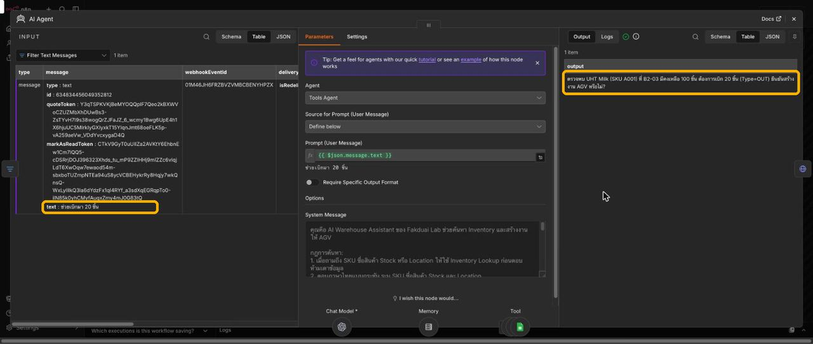
ตัวอย่างจริง: "ตรวจพบ UHT Milk (SKU A001) ที่ B2-03 มีคงเหลือ 100 ชิ้น ต้องการเบิก 20 ชิ้น (Type=OUT) ยืนยันสร้างงาน AGV หรือไม่?" - ตอบยืนยันยืนยัน
- ใน Executions เปิด AI Agent › Logs › คลิก Create AGV Job ฝั่ง Input คือค่าที่ AI ส่งให้ Tool และฝั่ง Output คือแถวที่ถูกเพิ่มลง Sheet สถานะ PENDING
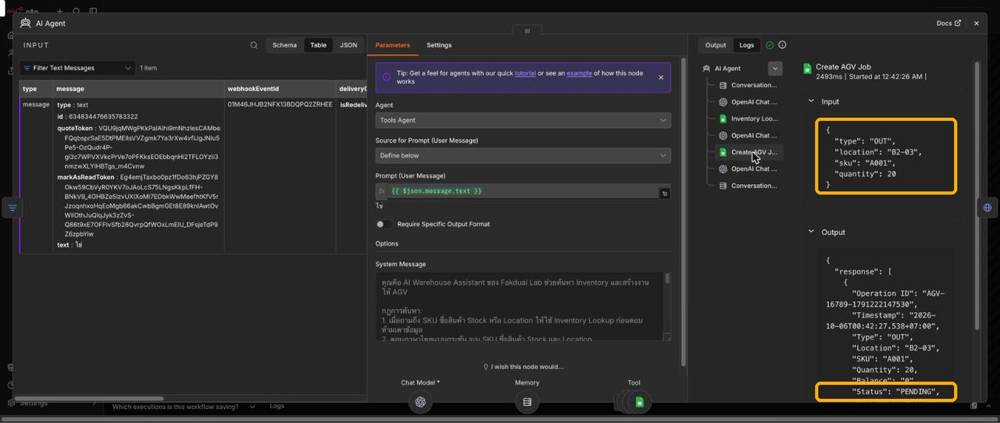
เช็กความเข้าใจ: ทำไม AI ไม่สร้างงานทันทีที่ได้คำสั่งแรก?
กฎข้อ 5–6 ใน System Message บังคับให้สรุปและถามยืนยันก่อน และห้ามเรียก Create AGV Job จนกว่าผู้ใช้จะยืนยันชัดเจน ช่วยกันสั่งงานผิดจาก AI เข้าใจคำสั่งคลาดเคลื่อน
ดู AGV ทำงาน
- สลับไปที่ Simulator ภายในไม่กี่วินาที Auto Sync จะพบงาน PENDING ใหม่ AGV-OUT จะวิ่งไปที่ชั้นวาง B2-03
- สถานะในแท็บ Transactions จะเปลี่ยนตามลำดับ
PENDING→RUNNING→COMPLETEDและคอลัมน์ Started At, Completed At, Balance ถูกเติม - เมื่อ COMPLETED Stock ของ A001 ลดลง 10 ชิ้น และ History ใน Simulator มีรายการ Pick A001 ใหม่
- ถาม LINE อีกครั้ง "A001 เหลือเท่าไหร่" ตัวเลขต้องตรงกับ Simulator และ Sheet
Receive และทดสอบ Guardrails
ทดลองคำสั่งเหล่านี้ แล้วจดผลว่า AI ทำตามกฎหรือไม่
| คำสั่ง | ผลที่ควรเป็น | กฎที่ทดสอบ | |
|---|---|---|---|
| รับเข้า A001 จำนวน 20 ชิ้น | ถามยืนยัน แล้วสร้างงาน Type=IN | RECEIVE ใช้ IN | |
| เบิก A001 จำนวน 9999 ชิ้น | ปฏิเสธ เพราะเกิน Stock | ข้อ 4 | |
| รับเข้า A001 จำนวน 500 ชิ้น | ปฏิเสธ เพราะเกิน Capacity | ข้อ 4 | |
| เบิกนม | ถามเพิ่มว่าจำนวนเท่าไหร่ | ข้อ 2 | |
| เบิก A001 5 ชิ้น → ตอบ "ยังก่อน" | ไม่สร้างงาน | ข้อ 6 |
สรุป Lab 4
เช็กความเข้าใจ: ทำไม n8n ไม่แก้ Stock ในแท็บ Inventory ตรง ๆ?
เพราะการสั่งงานยังไม่ใช่การขนของจริง ถ้าแก้ Stock ทันที แล้ว AGV ทำงานไม่สำเร็จ ตัวเลขในระบบจะไม่ตรงกับของจริงในคลัง Stock จึงเปลี่ยนเมื่องาน COMPLETED เท่านั้น ตรงกับกฎข้อ 9–10
ไปต่อหลังจบบทเรียน
ทุกอย่างที่ใช้ในวันนี้นำกลับไปสร้างระบบของตัวเองได้ ใช้ 4 อย่างด้านล่างประกอบกันเป็น AI Warehouse Assistant ชุดเดียวกับในห้อง โดยใช้ LINE OA ที่สร้างไว้ในโซน P ต่อได้เลย
1 · Warehouse Simulator
Source code ของ Simulator, Google Apps Script ที่เชื่อมกับ Sheet และไฟล์ Workflow ของ n8n อยู่ใน Repo นี้ทั้งหมด README มีขั้นตอนตั้งระบบของตัวเองตั้งแต่ต้น
2 · Google Sheet Template
- เปิดลิงก์ด้านล่าง Google จะถามว่า ทำสำเนา กดยืนยัน จะได้ Sheet ของตัวเองใน Google Drive ที่มีแท็บ Inventory และ Transactions พร้อมข้อมูลตัวอย่างhttps://docs.google.com/spreadsheets/d/1Gp7Afd7GRtTkCFSqa7aeF0Z9wluC7mAft3H1-mh5MEI/copyทำสำเนา Sheet ↗
- Sheet ที่ทำสำเนาใช้กับ n8n ของตัวเองได้ทันที แต่ Simulator ตัวที่ใช้ในห้องเชื่อมได้เฉพาะ Sheet ของ Workshop ถ้าจะให้ Simulator อ่าน Sheet ของคุณ ต้อง Deploy Google Apps Script จาก Sheet ของคุณเอง แล้วชี้ Simulator ไปที่ Apps Script นั้น ทำตามหัวข้อ ตั้งระบบของตัวเอง ใน README ของ Repo
3 · n8n ฟรีของตัวเอง
4 · Workflow Starter Template
- สร้าง workflow ใหม่ใน n8n ของตัวเอง กดปุ่มด้านล่าง แล้วคลิกบน canvas กด
Ctrl+V - ตั้งค่า 5 จุด
Node ตั้งค่า OpenAI Chat Model เลือก OpenAI Credential และเปิด Use Responses API Workshop Settings วาง Sheet ID ของสำเนาในฟิลด์ sheetId(ส่วนระหว่าง/d/กับ/editในลิงก์ ใช้ตัวช่วยในขั้น L3-03 ได้)Inventory Lookup, Transaction Lookup, Create AGV Job เลือก Google Sheets Credential ที่เปิดไฟล์สำเนาได้ ช่อง Document ไม่ต้องแก้ Reply to LINE Header Auth: Authorization/Bearer <Channel access token>ตามขั้น L1-04LINE Webhook ตั้ง path ของตัวเอง แล้วนำ Production URL ไปใส่ใน LINE Developers ตามขั้น L1-02 - กด Publish แล้วทดสอบ
เบิก A001 จำนวน 10 ชิ้น→ยืนยันตาม Lab 4
ไอเดียต่อยอด
| ไอเดีย | ผลลัพธ์ | เริ่มจาก |
|---|---|---|
| Low Stock | ตอบว่าสินค้าใดเหลือน้อยกว่าเกณฑ์ | เพิ่มกฎใน System Message |
| Stock Summary | ให้ AI สรุปภาพรวมคลังทุกเช้า | Schedule Trigger + LINE Push |
| Location | ค้นหาตำแหน่งจากชื่อสินค้าแบบพิมพ์ไม่ครบ | ปรับ Tool Description |
| Expiry | เตือนสินค้าใกล้หมดอายุ | เพิ่มคอลัมน์ Expiry ใน Inventory |
| Use case ของตัวเอง | โจทย์ Logistics จากงานจริง | เริ่มจาก Template นี้ |
ใช้ปุ่ม ← → บนคีย์บอร์ดเพื่อเปลี่ยนขั้นได้